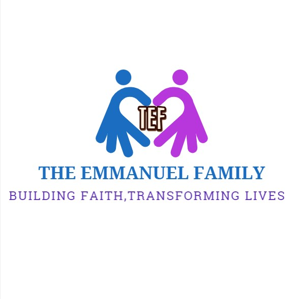
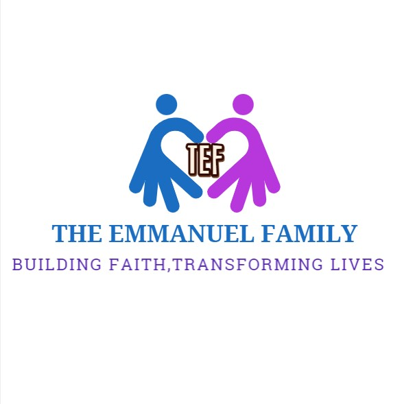

ALL IN ONE WEBSITE TO HELP STUDENS OF THE UNIVERSITY OF GHANA
Home
About
contact us
blogs
Welcometo our school website directory, your one-stop destination to access all the websites related to our school!
Our comprehensive directory is designed to make it easy for students to find the information they need quickly and easily.
Our directory includes links to all the relevant school websites, such as the main school website, the school's online learning platform, the library website, the extracurricular activities website, and more. You can also find links to the websites of specific departments, teachers, and staff members.
With our easy-to-use directory, you won't have to spend hours searching the internet for the information you need. Instead, you can simply browse through our organized list of links and find the website you're looking for in just a few clicks.
Browse our directory today and discover all the resources our school has to offer!
SOME IMPORTANT WEBISITES OF THE UNIVERSITY OF GHANA
click on this to access all university of ghana websites
 
